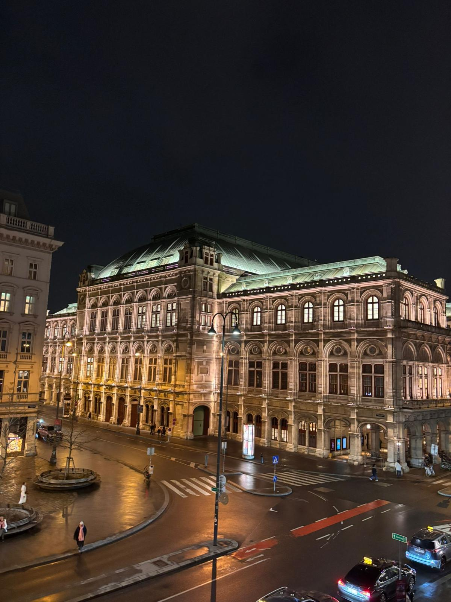
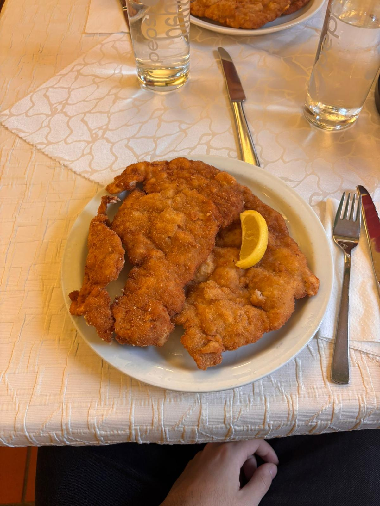

⚠️ Este artículo contiene enlaces de afiliado. Si reservas a través de ellos, puedo recibir una comisión sin coste adicional para ti. Más info aquí.
Viena en febrero. Cuando le dije a la gente que iba, casi todos me preguntaron lo mismo: "¿en invierno? ¿y eso?" Pues sí, en invierno. Y fue una de las mejores decisiones del viaje, porque febrero en Viena significa precios bajos, turistas de menos y una ciudad que se vive de otra manera.
Fui con mis dos mejores amigos, tres días, vuelo desde Barcelona. 93€ el vuelo de ida y vuelta por persona, combinando Wizz Air de ida y Vueling de vuelta. El hotel nos salió a 48€ por cabeza las tres noches. En total, sin pasarme ni un euro, me gasté menos de 270€ con todo incluido.
Este artículo es exactamente lo que gasté y lo que hice. Sin adornos.
"Llegamos a la Ópera de noche, con frío y todo, y la iluminación era una pasada. Uno de mis amigos dijo 'esto parece de película'. Y tenía razón."
— Martí, febrero 2026Vuelos baratos a Viena desde Barcelona
El aeropuerto de Viena es el Vienna International Airport (VIE), bien conectado con España desde varias ciudades. Nosotros volamos desde Barcelona.
La ida fue con Wizz Air Malta — salida a las 9:35, llegamos a media mañana y tuvimos casi el día entero por delante. La vuelta con Vueling, salida a las 14:05. En total: 93€ por persona ida y vuelta, solo equipaje de mano. Igual que con Turín, no fuimos y volvimos con la misma compañía — comparar precios entre aerolíneas distintas y combinarlas es uno de los trucos que más dinero me ahorra.
Por qué viajar a Viena en febrero es una buena idea
La temporada baja en Viena va de noviembre a marzo. Los precios de vuelos y hoteles bajan bastante, hay menos colas en los sitios más visitados y la ciudad tiene un ambiente completamente diferente al verano. Hace frío, sí, pero con buena ropa no es ningún problema — y el ahorro merece la pena.
- Precios de vuelo 30-40% más baratos que en verano.
- Los palacios y museos sin las colas de julio y agosto.
- La ciudad iluminada de noche tiene algo especial en invierno.
- Los cafés vieneses, que ya son buenos de por sí, cobran otro sentido cuando hace frío fuera.
Busca vuelos baratos a Viena
Compara Wizz Air, Vueling y Ryanair. A veces combinar aerolíneas sale bastante más barato que ir y volver con la misma.
Dónde dormir barato en Viena: el A&T Hotel & Hostel
Nos alojamos en el A&T Hotel & Hostel. Tres noches, 48€ por persona en total — algo menos de 16€ por noche. Para Viena, que no es precisamente la ciudad más barata de Europa, ese precio es muy bueno.
Es un hostel con habitaciones privadas, bien situado y limpio. Exactamente lo que necesitas cuando viajas con amigos y quieres gastar lo mínimo en alojamiento para tener más presupuesto para el resto.
Consejos para encontrar hotel barato en Viena
- Busca en el distrito 6 o 7 (Mariahilf y Neubau) — bien comunicados con el centro y más económicos que los distritos 1 y 2.
- Los hostels con habitaciones privadas suelen ser la opción más barata para grupos de 2-3 personas.
- Reserva con al menos 3-4 semanas de antelación en temporada baja — los precios suben rápido cuando quedan pocas habitaciones.
- Filtra siempre por "cancelación gratuita" en Booking por si cambia algo.
Busca alojamiento barato en Viena
Hay buenas opciones por menos de 20€/noche si buscas con tiempo.
El tour en español: lo que nadie espera en Viena
El primer día, por la tarde, hicimos un tour guiado en español. Y aquí viene algo que no me esperaba: la cantidad de españoles que había. Éramos un grupo grande, todos españoles, en Viena, en la primera semana de febrero. No sé si es que somos muy viajeros o que nos gusta el frío más de lo que pensaba.
El tour mereció mucho la pena para orientarse el primer día. En pocas horas te ubicas, entiendes la historia de la ciudad y sabes qué ver con más calma los días siguientes. Si vas por primera vez, te lo recomiendo.
Hay free tours en español casi todos los días. Son gratuitos — pagas lo que quieras al final según lo que te haya parecido. Busca "free tour Viena español" y encontrarás varias opciones.
Qué ver en Viena
Viena es una ciudad que no te da tregua. En tres días vimos mucho, pero se nos quedaron cosas pendientes. Esto es lo que visitamos nosotros:


Qué comer en Viena (y cómo no arruinarte)
La gastronomía vienesa es buena, pero puede salir cara si no sabes dónde ir. El plato que más me sorprendió fue el Wiener Schnitzel — escalope de ternera empanado, enorme, con ensalada de patata. Eso sí, hay una diferencia enorme entre el precio según dónde lo pidas.
Íbamos en metro el segundo día cuando un par de tíos escucharon que hablábamos en español y se acercaron. Llevaban dos años viviendo en Viena. Nos dijeron directamente: "No comáis en el centro, los precios son una trampa para turistas." Nos recomendaron un par de sitios alejados del primer distrito donde el Schnitzel sale por la mitad de precio y es igual de bueno. Ese tipo de información no la encuentras en ninguna guía.
El consejo funciona en casi cualquier ciudad europea: alejarse una o dos calles del centro turístico ya reduce el precio a la mitad en muchos restaurantes. En Viena especialmente, el primer distrito (el Innere Stadt) tiene los precios más inflados de toda la ciudad.
El Sachertorte: dónde tomarlo sin pagar de más
El Sachertorte es la tarta de chocolate más famosa de Austria. La original se sirve en el Hotel Sacher, pero tiene lista de espera y los precios son bastante altos. Nosotros lo tomamos en el Café Demel, que tiene su propia versión histórica — hay incluso una disputa legal de décadas entre Sacher y Demel sobre cuál es la auténtica. El resultado: igual de bueno, con menos espera y algo más económico.
Pide el "Einspänner" — café con nata montada — junto al Sachertorte. Es la combinación clásica vienesa y cuesta menos que un café con leche en cualquier aeropuerto español.
La camiseta que no pude comprar
Tengo una costumbre cuando viajo: comprarme la camiseta del equipo de fútbol de la ciudad. En Londres me llevé una, en Turín la del Torino FC. Viena tenía que ser la del FK Austria Wien — una camiseta morada preciosa, de las más bonitas que he visto.
El problema es que Viena no es una ciudad futbolera. Preguntamos, buscamos, dimos vueltas — encontramos una tienda oficial pero estaba cerrada. No hubo manera. Sin tiempo para ir hasta el estadio, la camiseta se quedó en Viena.
Queda pendiente para la próxima vez. Porque habrá próxima vez.
La tienda oficial está en el estadio Franz Horr (Favoriten, distrito 10). Si vas a por la camiseta específicamente, comprueba el horario antes de ir — no siempre está abierta entre semana.
El truco de la mochila: cómo caber en equipaje de mano en invierno
Este es uno de los consejos más prácticos que puedo darte, especialmente para viajes de invierno donde la ropa abulla más.
Yo llevo una mochila diseñada exactamente con las medidas que permiten las aerolíneas de bajo coste como equipaje de mano — normalmente 40x20x25 cm para Ryanair o similares. No un centímetro más. Parece poco, pero con organización cabe perfectamente la ropa de tres días de invierno: abrigo aparte (que llevas puesto en el avión), un jersey grueso, dos camisetas, ropa interior, neceser.
El ahorro es real: entre 30 y 60€ por trayecto solo en no facturar maleta. En un viaje de ida y vuelta, eso es hasta 120€ que se quedan en tu bolsillo.
Lleva el abrigo y el jersey más grueso puesto en el avión — no ocupan nada en la mochila y puedes ir con todo lo que necesitas sin problemas. Parece obvio pero mucha gente no lo hace.
Presupuesto real: cuánto gasté en Viena
Aquí está el desglose completo por persona, sin redondear nada:
Mis 5 trucos para viajar barato a Viena
¿Merece la pena Viena con poco presupuesto?
Viena tiene fama de ciudad cara, y en parte es verdad — si te quedas en el centro, comes en restaurantes turísticos y entras a todos los museos, puedes gastarte el doble de lo que gasté yo. Pero si viajas con cabeza, la ciudad es perfectamente asequible.
La arquitectura, los cafés, los palacios, la historia — todo eso está ahí y gran parte es gratuito o muy barato. El Sachertorte en el Demel, el Wiener Schnitzel en un sitio que te recomiende alguien que vive allí, el reloj Anker a mediodía con las figuras desfilando. Son cosas que no cuestan nada o casi nada y que te quedas grabadas.
Por menos de 270€ desde Barcelona, tres días en Viena en invierno. Difícil encontrar una ciudad con tanto nivel a ese precio.
¿Te animas a ir a Viena?
Compara vuelos y busca el hotel con tiempo — en temporada baja los precios son muy buenos si reservas con 3-4 semanas de antelación.